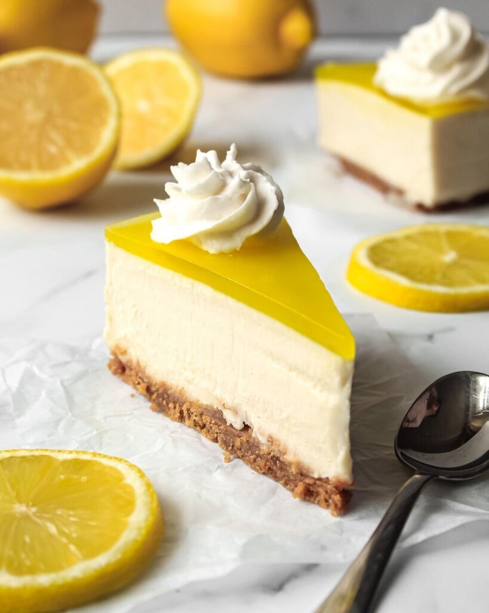

No Bake Lemon Cheesecake

Description
Very soft and creamy no-bake lemon cake. You will use a lot of lemons for this easy recipe, but it's very worth it.
Ingredients
For the crust:
- 4oz (120g) Digestive biscuits
- 4 tbsp (60g) of melted butter
For the cake:
- 5 sheets of gelatin
- 3 tbsp (50ml) of water
- 7tbsp (100ml) of lemon juice (2-3 lemons)
- 1/2 Cup (100g) of granulated sugar
- 12oz (350g) Philadelphia cream cheese (room temperature)
- 2oz (350ml) of heavy cream (minimum35% fat). It's better if it's chilled
For decorating the cake:
- 3 tbsp (45ml) lemon juice
- 2 tbsp (30ml) water
- 2 tbsp (25g) sugar
- Thinly sliced lemon
Preparation:
-
In a food processor, add 4oz (120g) digestive biscuits. Crush them until they are totally crushed, or no big chunks left (0,2 inches-0,5 cm). Add 4 tbsp (60g) of melted butter, and process until totally combined. You can also do this whole process by having the biscuits in a zip bag, and crushing them with a rolling pin, and then combining it with the melted butter in a small bowl with a spoon.
-
Add the mixture into a 8inch (20cm) spring pan or a removable bottom pan, and flatten it with a spoon or the bottom of a cup. Leave in the fridge for later.
-
In a small bowl with cold water, add 5 sheets of gelatin. Leave for later.
-
In a small sauce pan, add 3 tbsp (50ml) of water, 7tbsp (100ml) of lemon juice (2-3 lemons), and 1/2 Cup (100g) of granulated sugar. Turn it on to low-medium heat and stir until the sugar dissolves. Once it starts boiling, add the 5 sheets of gelatin, turn off the heat, and stir for 1min before taking of heat, and leaving it to cool down for 5mins.
-
In a big bowl, add 12oz (350g) of Philadelphia cream cheese (room temperature), the zest of 2 lemons, and the lemon mixture from before, and whisk until combined.
-
In another big bowl, add 12oz (350ml) of heavy cream (35% fat, and better if it's chilled), and beat until medium-stiff peaks.
-
Add the Philadelphia mixture to the Heavy Cream mixture, and beat everything until combined. Then pour the mixture in the pan with the crust, flatten it out, and leave in fridge for at least 2 hours.
-
For the decoration, into a bowl with cold water, add 1 gelatin sheet. Leave it for later.
-
In a small sauce pan, add 3 tbsp (45ml) lemon juice, 2 tbsp (30ml) water, and 2 tbsp (25g) sugar. Turn it on to low-medium heat, and stir until the sugar dissolves. Add the gelatin sheet and stir for 1min. Then let the mixture cool down for 5min.
-
After those 5mins, you can add 1 or 2 drops of yellow coloring.
-
Pour the mixture into the Philadelphia pan. Pour it on top of the pan, on the back of table spoon, so it doesn't damage the surface of the cake. At this point you could also decorate with very thinly sliced lemon before putting it in the fridge for at least 2 hours.